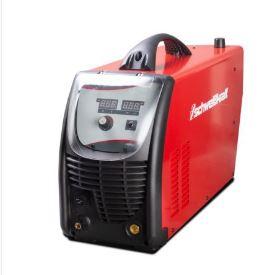
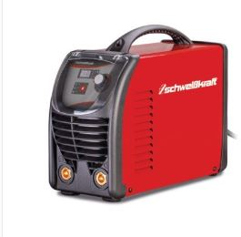
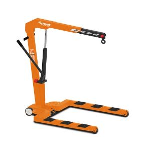
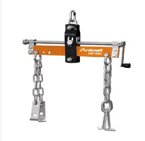

Kompaktowe, ekonomiczne i wydajne rozwiązanie do profesjonalnego i ciągłego użytkowania.
Interfejs CNC do podłączenia plotera plazmowego.

VarioProtect XXL-W TC AIR TH3 Przyłbica spawalnicza z systemem nadmuchu powietrza TRUE COLOR
Stopień ochrony DIN 5-9 i DIN 9-13
Do 8h pracy na baterii
4 czujniki
Filtr TH3
Możliwość ustawienia kierunku nadmuchu
CRAFT-STICK 201 P – Wytrzymała spawarka elektrodowa 230 V
Urządzenie może być użytkowane zarówno wewnątrz, jak i na zewnątrz IP 23
Anty-Stick
Hot-Start
Arc Force Control
PFC – korekcja współczynnika mocy
VRD – Redukcja napięcia na biegu jałowym

Narzędzia uniwersalne do warsztatów
WKP 2 TOP Dźwig warsztatowy pod palety euro
Model: WKP 2 TOP


MP 680 Pozycjoner silnika
Nośność 680 kg
Model: MP 680
PG-E 80 TEA Synchroniczny generator prądu dla wymagających użytkowników prywatnych i profesjonalistów.